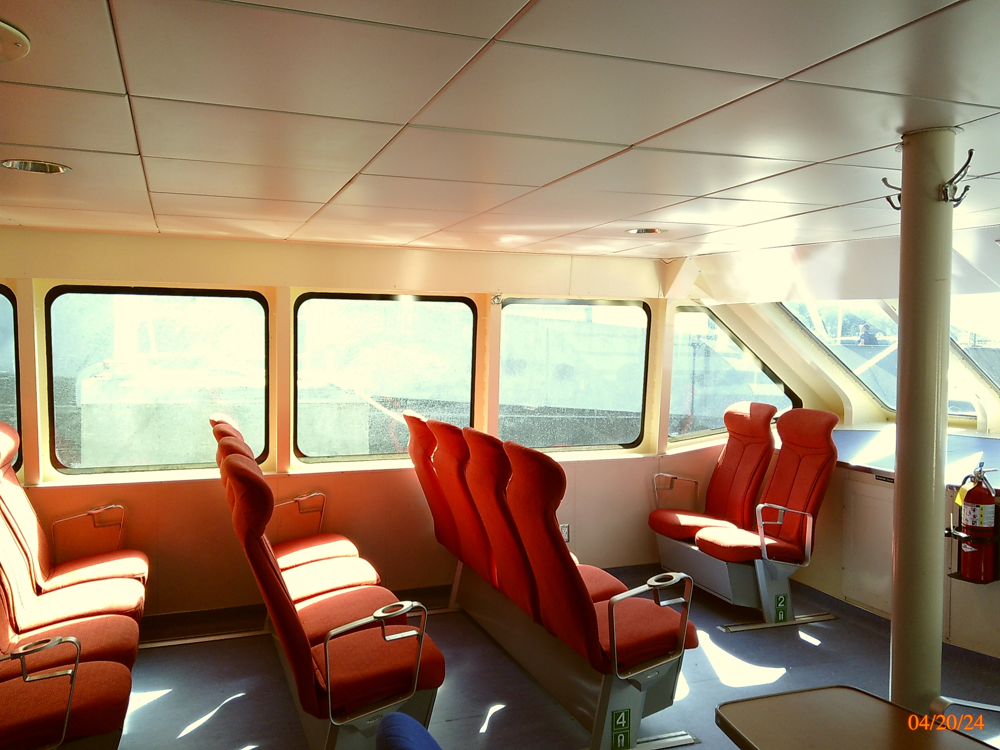

Nostalgia is a big business, especially with photographers. Whether it’s Fuji Films film simulations, TikTok trending Digicam users, or film camera enthusiasts, We yearn to re-create the joys of the past. I recently gave in and bought a very subpar, compared to today’s standards, CampSnap camera just because it lacks a screen and mimics the feel of a disposable camera. It’s a blast to use despite the picture quality of a mid-2000s digital camera. However, it lacks the old-looking date stamp. Presenting a very niche tool: RetroFilmDate.
RetroFilmDate Is a simple web app built with Vite that allows users to upload an image and then add a retro-style date stamp to the image. The user interface includes a file input to upload a JPEG, a dropdown to select different fonts for the timestamp, and an image preview section where the stamped image is displayed on a photo I took on the CampSnap camera.
I originally built this Friday evening just to feed my curiosity. I started with a simple Python script using the Pillow library, which evolved into a PyQt5/Pyinstaller desktop application which then led to a Saturday of turning my Python code into a Vite web application I could host on GitHub pages.
I hope CampSnap or any nostalgia-hungry enthusiast will enjoy it!
